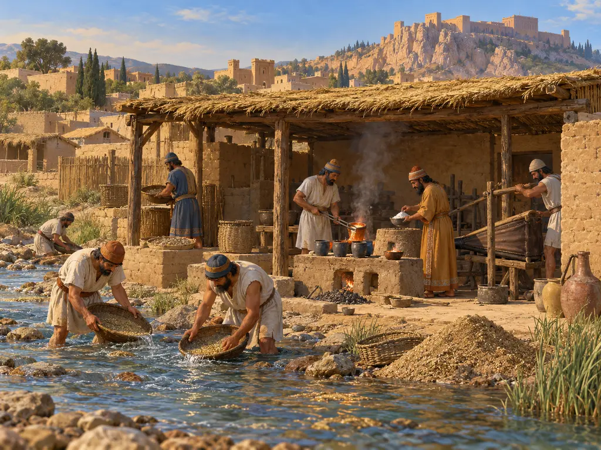
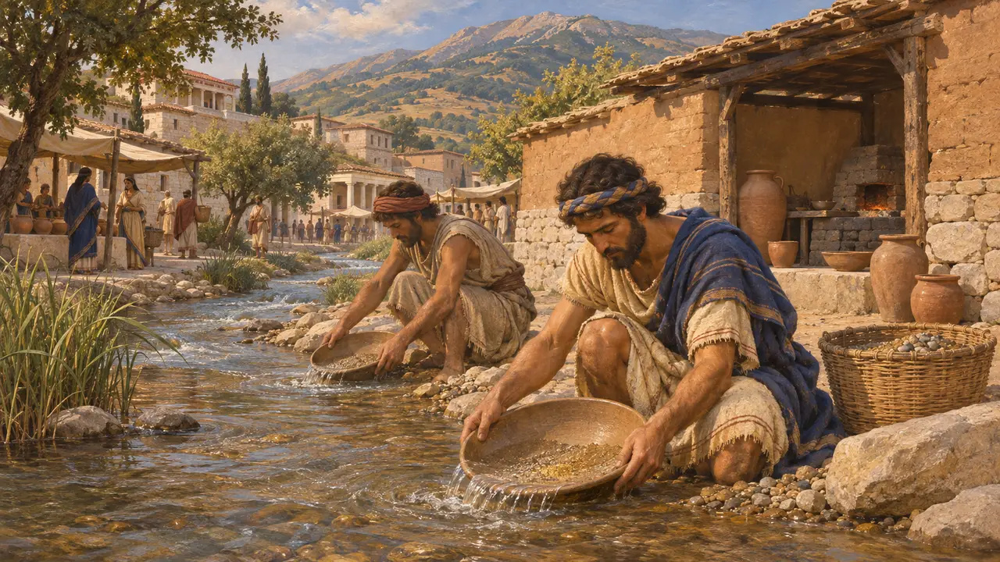
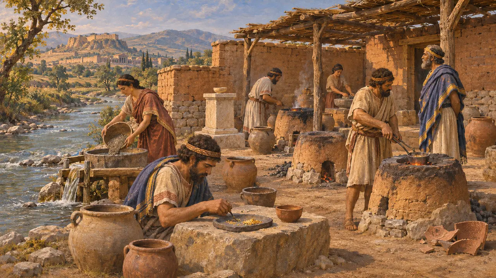
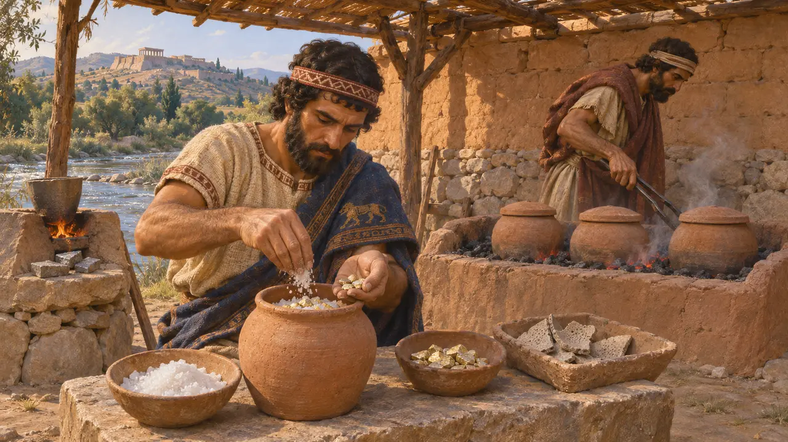
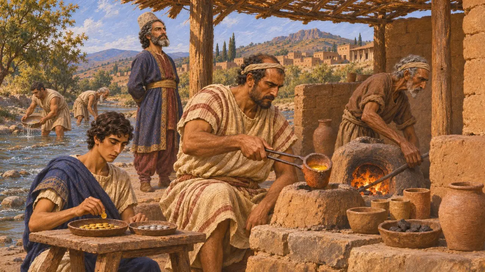
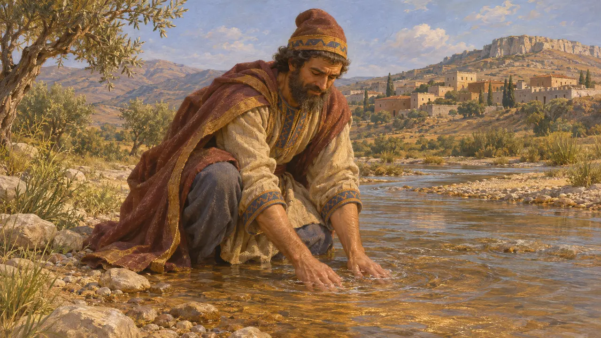

Raffineria d'oro del Pattolo
Laboratorio per la raffinazione dell'oro fluviale lungo il Pattolo a Sardi, in Lidia, VI secolo a.C.
Nel gioco: Livello 7: Sardi brucia
Il Pattolo scendeva dal monte Tmolo attraversando Sardi e trasportava pagliuzze d'oro naturale mescolato ad argento. Lungo la sua riva gli archeologi hanno rinvenuto una raffineria lidia in cui questo metallo veniva purificato fino a ottenere oro quasi puro. Il laboratorio aiuta a spiegare la ricchezza di Creso e la prima monetazione d'oro che Sardi trasmise ai suoi dominatori persiani.
Nel gioco: I lavatori e i raffinatori del gioco seguono a grandi linee il metodo emerso dagli scavi. Il laboratorio scavato cadde probabilmente in disuso entro la metà del VI secolo, quindi una raffineria in funzione negli anni 490 a.C. è un'ipotesi del gioco.

L'oro del Pattolo
Racconto anticoErodoto afferma che la Lidia aveva poche meraviglie degne di nota, a parte la polvere d'oro trascinata giù dallo Tmolo. Descrivendo l'incendio di Sardi da parte di Ioni e Ateniesi nel 498 a.C., racconta che il Pattolo attraversava la piazza del mercato portando con sé polvere d'oro. Strabone, che scrive molto più tardi, afferma che un tempo il fiume trasportava oro, ma che ai suoi giorni l'oro si era ormai esaurito.
Herodotus 1.93; Herodotus 5.101; Strabo 13.4.5

La bottega sul fiume
Nelle fontiNegli anni '60 e '70 del Novecento la spedizione Harvard-Cornell a Sardi scavò un'area artigianale sulla riva orientale del Pattolo, nota come Pactolus North. Conteneva molti piccoli focolari e fornaci, frammenti di rozzi crogioli di raffinazione, rivestimenti di focolare impregnati di piombo e minuscole particelle d'oro. Un piccolo altare, probabilmente dedicato alla dea Cibebe o Cibele, sorgeva tra gli impianti.
A. Ramage and P. Craddock, King Croesus' Gold, 2000

Separare l'oro dall'argento
Nelle fontiL'oro fluviale di Sardi era elettro, una lega naturale di oro con una buona quantità di argento. I ritrovamenti mostrano che i raffinatori lo fondevano prima con il piombo per eliminare i metalli vili. Poi disponevano l'oro con sale in vasi e lo scaldavano a lungo, così che l'argento si trasformasse in cloruro e penetrasse nelle pareti dei vasi. L'analisi dei residui suggerisce che probabilmente anche l'argento venisse recuperato.
A. Ramage and P. Craddock, King Croesus' Gold, 2000

Creso, le monete e i Persiani
ContesoErodoto afferma che i Lidi furono i primi a coniare monete d'oro e d'argento. Gli archeologi che l'hanno scavata datano la raffineria all'epoca dei re lidi e la collegano a monete distinte d'oro e d'argento, ma la sua cronologia precisa è discussa. Gli studiosi dibattono inoltre se queste monete siano state coniate da Creso o dai primi governatori persiani dopo la conquista, negli anni '40 del VI secolo a.C., e per quanto tempo la raffinazione sia proseguita a Sardi sotto il dominio persiano.
Herodotus 1.94; A. Ramage and P. Craddock, King Croesus' Gold, 2000

Mida e il fiume d'oro
Leggenda posterioreGli scrittori greci narravano che al re Mida di Frigia fu concesso il potere di trasformare in oro tutto ciò che toccava. Nella versione più nota, tramandata dagli autori romani, gli fu detto di lavarsi nel Pattolo per liberarsene, e le sabbie del fiume divennero d'oro. Il racconto più completo è del poeta Ovidio, circa cinque secoli dopo gli eventi di questo gioco. È una favola morale sull'avidità, non una testimonianza di come l'oro sia arrivato lì.
Ovid, Metamorphoses 11
Fonti
- A. Ramage and P. Craddock, King Croesus' Gold: Excavations at Sardis and the History of Gold Refining, 2000
- Herodotus 1.93
- Herodotus 1.94
- Herodotus 5.101
- Strabo 13.4.5
- Ovid, Metamorphoses 11